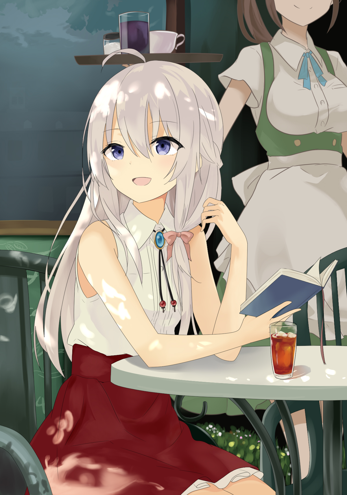

画像をクリックしていただくと大きい画像が見れます。
体の構図が、しっかりできているように意識して描きました。椅子の素材の流れを、出すように色付けをしました。
 原画 作：あずーる @azure_0608
色付けが私好みで、勉強したくこの絵を、トレースしました。
自分のオリジナルキャラクターの、武器を3Dにしてしました。こだわり点は、刃を一つずつ作っており、回転するようになっているところです。
シスターを元にして、キャラクターデザインしました。エフェクトは、彼女が魔獣を召喚しようとしてるとこの、ゲートをイメージして描きました。
ピニャコラーダ
作詞作曲：ねじ式 Vocal：結月ゆかり、IA